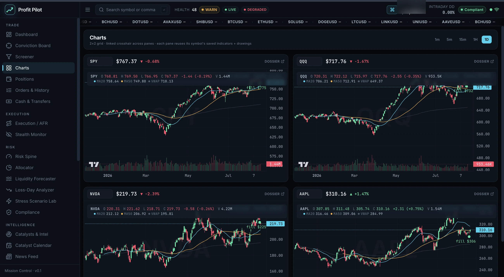
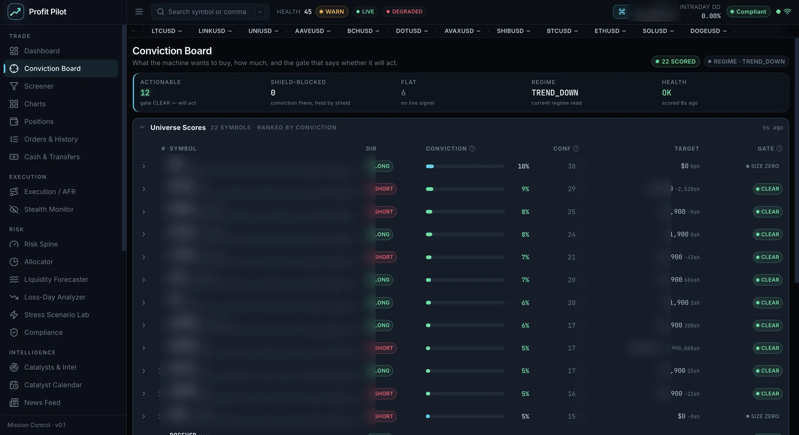
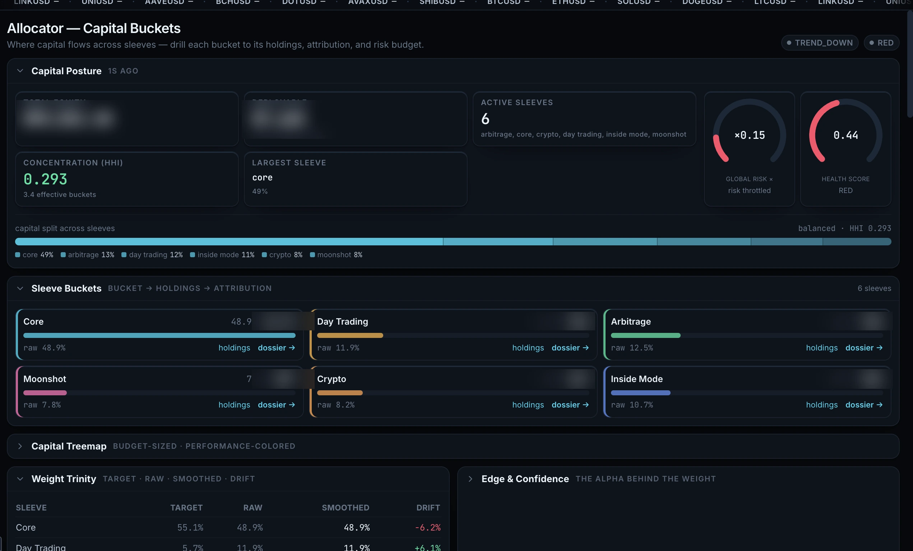
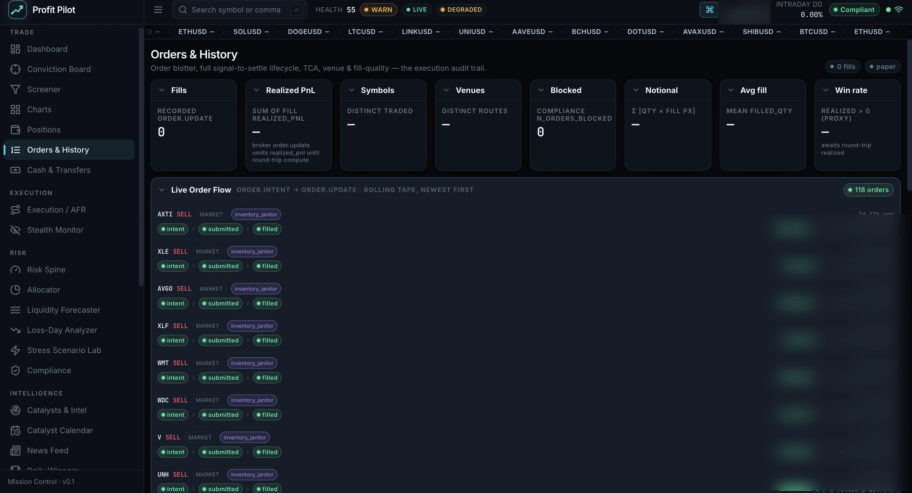
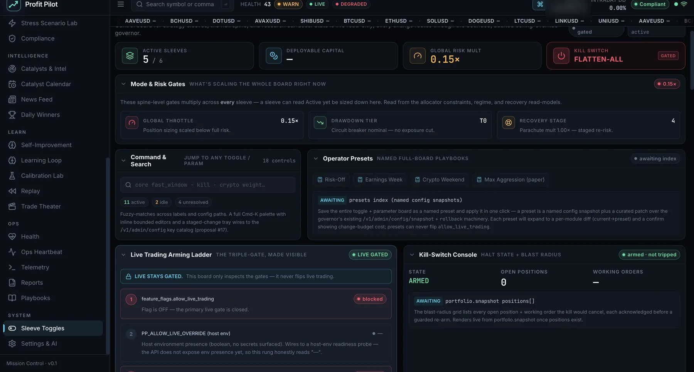
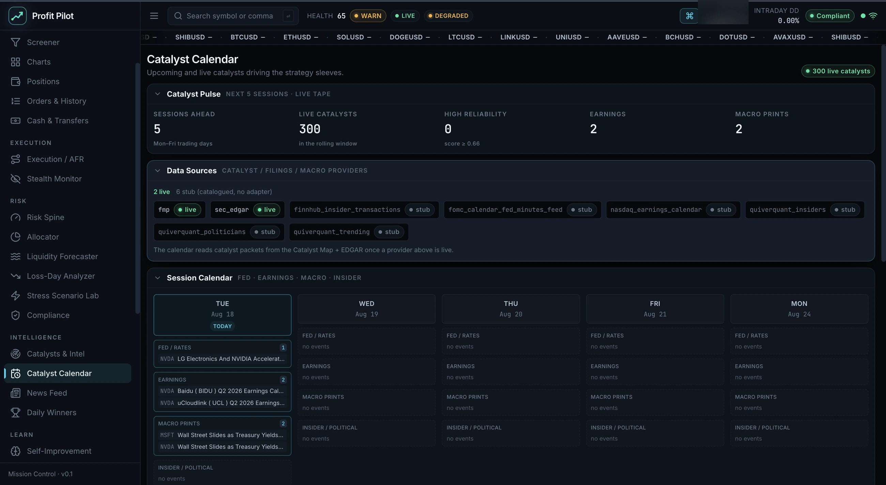
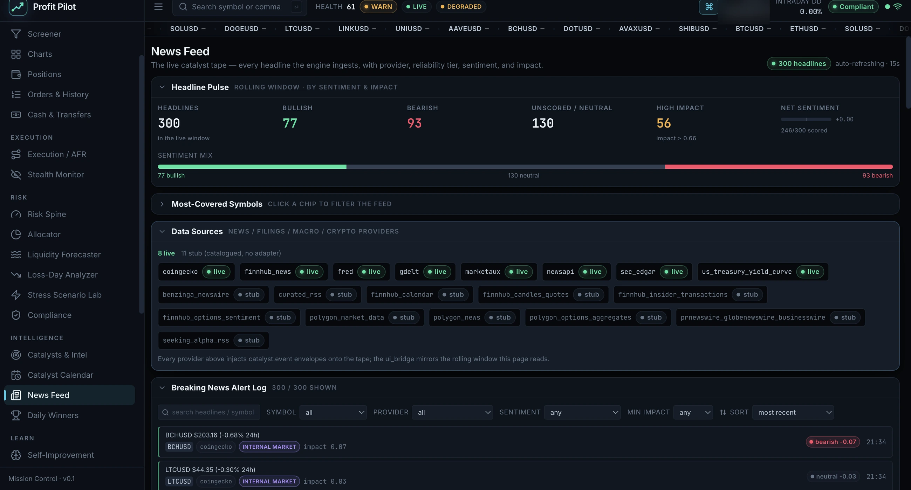
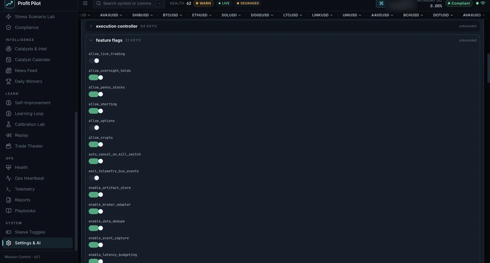

These frames are the running system, captured from the deployed console against live market
data. Account balances and position values are redacted — equity, buying power, cash,
deployable capital, per-sleeve dollar allocations, order fill prices and quantities, and the per-symbol
model internals on the Conviction Board. Everything structural is untouched: percentages, ratios, weights,
concentration, drift and counts, which is the part that carries the information.

Charts. A 2×2 TradingView grid with a linked crosshair across panes, each reusing its symbol’s saved indicators — MA20, MA50 and session VWAP on live daily candles, with the engine’s own fill levels marked. TradingView provides the charting layer; the fill markers are the platform’s. Live production console. Account balances and position values are redacted; percentages, ratios, weights, concentration and counts are intact. The account is a paper account — live capital is gated by allow_live_trading: false.

Command Deck. Equity curve, capital allocation by sleeve, the risk-spine governor dials with clamp-stack utilisation, champion-versus-challenger state and the intel→thesis→position lineage, in one view. Live production console. Account balances and position values are redacted; percentages, ratios, weights, concentration and counts are intact. The account is a paper account — live capital is gated by allow_live_trading: false.

Conviction Board. Twenty-two symbols ranked with the gate column visible — what the system currently believes and, more usefully, what it is refusing to act on. Live production console. Account balances and position values are redacted; percentages, ratios, weights, concentration and counts are intact. The account is a paper account — live capital is gated by allow_live_trading: false.

Allocator & capital buckets. Capital distribution across the sleeves under the risk spine’s constraints, with concentration and drift measured rather than asserted. Live production console. Account balances and position values are redacted; percentages, ratios, weights, concentration and counts are intact. The account is a paper account — live capital is gated by allow_live_trading: false.

Orders & History. The full order lifecycle — intent, submitted, filled — which is what makes fill reconciliation against the broker possible. Live production console. Account balances and position values are redacted; percentages, ratios, weights, concentration and counts are intact. The account is a paper account — live capital is gated by allow_live_trading: false.

Sleeve toggles & arming ladder. Per-sleeve enablement, the risk gates, and the live-trading arming ladder with its kill switch. This is the surface that keeps the system in paper. Live production console. Account balances and position values are redacted; percentages, ratios, weights, concentration and counts are intact. The account is a paper account — live capital is gated by allow_live_trading: false.

Catalyst Calendar. Three hundred live catalysts with provider status — the scheduled-event feed that Inside Mode and the Catalyst Map consume. Live production console. Account balances and position values are redacted; percentages, ratios, weights, concentration and counts are intact. The account is a paper account — live capital is gated by allow_live_trading: false.

News Feed. Three hundred headlines across eight live providers with the sentiment mix broken out. Live production console. Account balances and position values are redacted; percentages, ratios, weights, concentration and counts are intact. The account is a paper account — live capital is gated by allow_live_trading: false.

Settings & feature flags. The runtime flag surface — where allow_live_trading and the rest of the gating actually lives. Live production console. Account balances and position values are redacted; percentages, ratios, weights, concentration and counts are intact. The account is a paper account — live capital is gated by allow_live_trading: false.